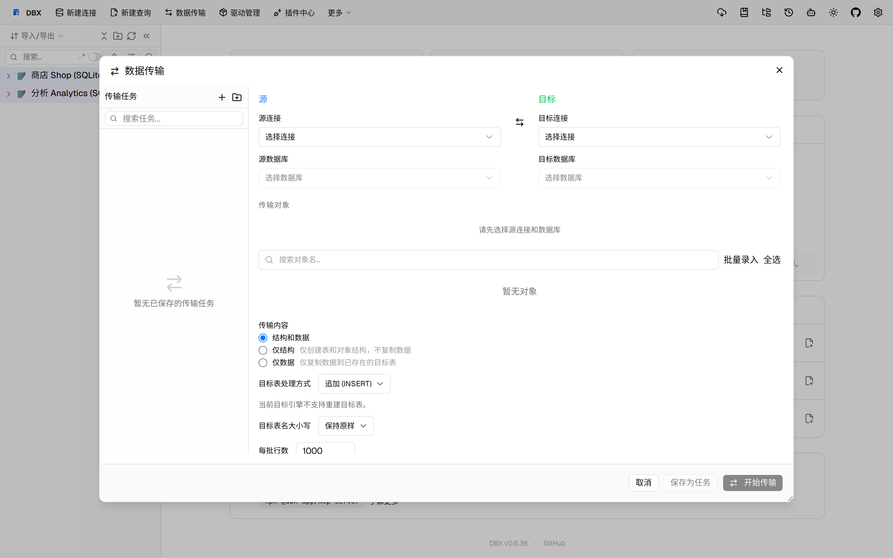
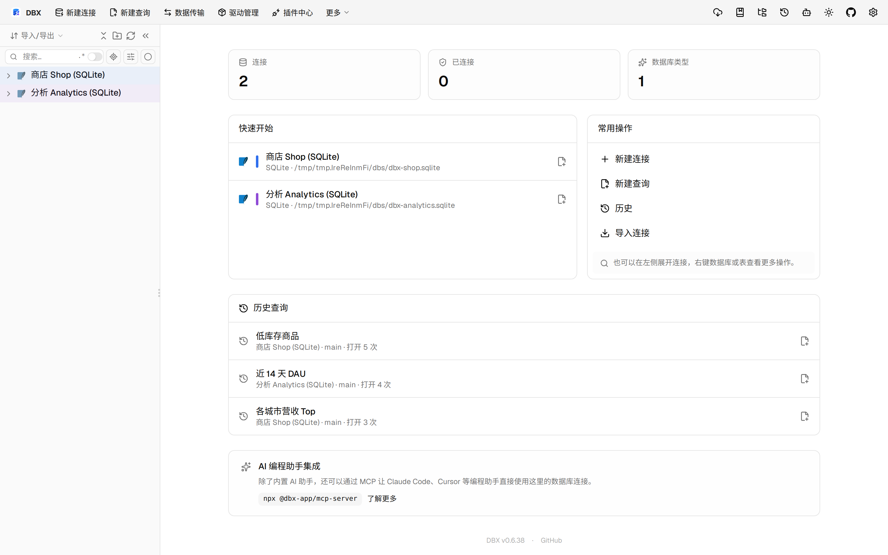

#11553 界面预览
commit 6598ebc · 回到 PR · 数据传输对话框新增了 Oracle/OceanBase Oracle 的包规格/包体迁移支持：对象树里可单独选择包规格和包体，迁移前会显示依赖与冲突预检，执行结果页也会展示每个对象的编译、读回验证和恢复信息。
红线是鼠标走过的轨迹，红色圆环是一次点击；底部文字是这一步在做什么。多个场景各自从应用初始状态开始。空格暂停，← → 逐段查看。

打开数据传输并查看包对象入口 · 查看数据传输对话框的对象选择区域

查看包规格与包体的预检提示 · 查看包规格/包体预检与冲突策略的位置
 查看迁移进度里的对象结果 · 查看对象迁移结果在进度对话框中的展示位置
查看迁移进度里的对象结果 · 查看对象迁移结果在进度对话框中的展示位置